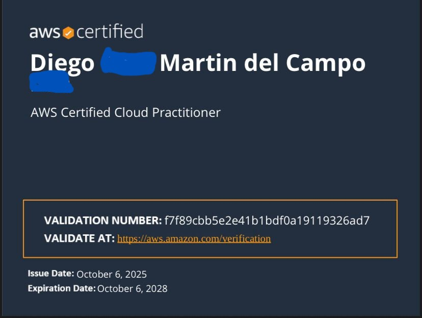

Dirgo
¿Quién soy?
- Estudiante de la carrera Ingenieria en Sistemas Computacionales.
- Especialidad en Ciberseguridad integral.
- Entusiasta de AWS
- Me gusta aprender y probar nuevas herramientas y tecnologias
Conocimiento en AWS
Actualmente cuento con una certificacion de Cloud Practicioner.
